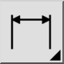

Dette er en automatisk oversettelse.
Verktøylinje/ikon:

Dimensjoner brukes til å legge til mål i en tegning. Dimensjoner består vanligvis av en tekstetikett og noen linjer og piler for å angi den nøyaktige plasseringen av målet. Tekstetiketten kan være ledsaget av toleranseangivelser eller symboler. Verktøylinjen for alternativer som vises mens en dimensjon opprettes, hjelper deg med å definere innholdet i dimensjonsetiketten og toleransene.